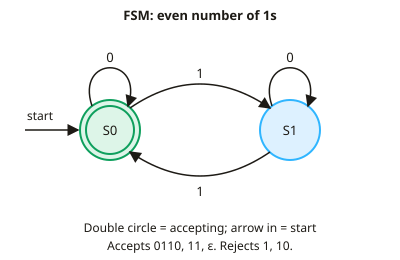

A-level Computer Science Year 12 · Topic 6
Theory of computation
The theory of computation asks what computers can do in principle, and what they can never do.
We will use finite state machines, set notation, regular expressions and Backus Naur form.
Then we meet Turing machines, the limits of computation, tractable and intractable problems, and the halting problem.
- 7 subtopics
- 143 questions
- Free: 6.1 notes and 10 questions
In this topic
- 6.1Finite state machines and state transition diagrams/tablesFree below · 22 questions
- 6.2Finite state machines with output (Mealy machines)Open in Full Marks · 24 questions
- 6.3Set theory and notation for regular languagesOpen in Full Marks · 16 questions
- 6.4Regular expressions and regular languagesOpen in Full Marks · 17 questions
- 6.5Context-free languages, BNF and syntax diagramsOpen in Full Marks · 20 questions
- 6.6Turing machines and the universal Turing machineOpen in Full Marks · 19 questions
- 6.7Classification of problems, tractability and the halting problemOpen in Full Marks · 25 questions
6.1 · Free notes
Finite state machines and state transition diagrams/tables

Key points
- A finite state machine (FSM) is an abstract model of computation with a finite set of states. It reads an input string one symbol at a time and moves between states according to the transition rules.
- A state transition diagram uses circles for states and arrows for transitions, each labelled with the input symbol that triggers it. An arrow coming from nowhere marks the start state, and a double circle marks an accepting (final) state.
- A state transition table lists the states down the side and the input symbols across the top. Each cell gives the next state. Mark the start state and the accepting states, because the table must carry the same information as the diagram.
- The FSMs on the AQA course are deterministic. Every state has exactly one transition for each symbol in the input alphabet, so the next state is always fully determined.
- An input string is accepted if the machine is in an accepting state after the last symbol has been read. Otherwise it is rejected. Trace the input symbol by symbol and write down each state as you go.
- The set of all strings an FSM accepts is the language it recognises. FSMs recognise exactly the regular languages, which can also be described by regular expressions.
- An FSM has no memory except its current state, so it cannot count without limit. It cannot recognise languages such as aⁿbⁿ (n a's followed by n b's), which need unbounded counting.
- The empty string (ε) is accepted if and only if the start state is also an accepting state.
- If a transition is missing, it leads to an implied dead (trap) state. This is a non-accepting state whose transitions all return to itself, so the string is rejected whatever follows.
- Typical uses of FSMs include vending machines, traffic lights, pattern matching, lexical analysis in compilers and validating input. A machine with n states and k input symbols has n × k transitions.
- Exam technique: check that every state has an arrow for every input symbol. Label the start state and mark the accepting states clearly. When asked what a machine does, describe the language in words, for example 'strings with an even number of 1s'.
In more detail
- Worked turnstile: states Locked and Unlocked: a coin moves Locked → Unlocked; a push moves Unlocked → Locked; a push while Locked stays Locked.
- Worked even number of 1s: states Even (start, accepting) and Odd; reading 1 switches state and 0 stays → input 1011 ends in Odd, so it is rejected.
- Worked transition table: rows are the current state, columns are the inputs, and each cell is the next state.
- Worked vending machine: states 0p, 10p and 20p; each 10p coin moves up a state, and reaching 20p dispenses and returns to 0p.
Practice
Finite state machines and state transition diagrams/tables: 10 questions
Pick an answer to check it, or open the answer for the explanation.
1. FSM: start state S0 (accepting). Input 1 switches between S0 and S1; input 0 keeps the current state. Which string is accepted?
- 0110
- 111
- 10
- 1101
Show answer
A: 0110. 0110 contains two 1s, so the machine switches S0→S1→S0 and ends in S0, which is accepting. 1101 and 111 have three 1s, and 10 has one.
2. Start S0, accepting S2. Table: S0: a→S1, b→S0. S1: a→S2, b→S0. S2: a→S2, b→S2. Which string is accepted?
- abaa
- bbb
- abab
- baba
Show answer
A: abaa. abaa gives S0→S1→S0→S1→S2, which is accepting. abab and baba end in S0 and S1, and bbb stays in S0. The machine accepts strings containing aa.
3. Which language can NOT be recognised by a finite state machine?
- Strings of a's of even length
- Binary strings ending in 01
- Strings of n a's followed by n b's
- Binary strings containing 111
Show answer
C: Strings of n a's followed by n b's. aⁿbⁿ needs the machine to count n without limit, but an FSM has only finitely many states. The other three languages are regular.
4. Which statement about a deterministic FSM is correct?
- Each state has exactly one transition for each input symbol
- A state may have two transitions for the same symbol
- It stores input on an unlimited stack
- It must have exactly one accepting state
Show answer
A: Each state has exactly one transition for each input symbol. Deterministic means the next state is fully determined by the current state and the input symbol. There can be several accepting states, or none, and there is no stack.
5. An FSM accepts the empty string ε if and only if which condition holds?
- The machine has no accepting states
- The start state has a loop on every symbol
- The machine has an even number of states
- The start state is an accepting state
Show answer
D: The start state is an accepting state. With no input symbols read, the machine is still in its start state. So ε is accepted only if the start state is accepting.
6. A deterministic FSM has 5 states and the input alphabet {0, 1}. How many next-state entries are in its complete transition table?
- 5
- 25
- 7
- 10
Show answer
D: 10. There is one entry for every (state, symbol) pair: 5 states × 2 symbols = 10 entries.
7. An FSM must accept binary strings over {0,1} that end in 1. What is the minimum number of states needed?
- 1
- 2
- 3
- 4
Show answer
B: 2. Two states are enough: one for 'last symbol was not 1' (start) and one for 'last symbol was 1' (accepting). Each state needs only 0 and 1 transitions.
8. Start S0 (accepting). Input 1 toggles S0 and S1; input 0 keeps the state. After reading 10110, what happens?
- Rejected, ends in S1
- Rejected, ends in S0
- Accepted, ends in S0
- Accepted, ends in S1
Show answer
A: Rejected, ends in S1. 10110 has three 1s, so the machine toggles three times: S0→S1→S0→S1. It ends in S1, which is not accepting, so the string is rejected.
9. Which is NOT part of the definition of a basic FSM without output?
- A start state
- A finite set of states
- An input alphabet
- A tape the machine can overwrite
Show answer
D: A tape the machine can overwrite. An FSM has states, an alphabet, transitions, a start state and accepting states. A rewritable tape belongs to a Turing machine.
10. Which class of languages is recognised by finite state machines?
- Regular languages
- All context-free languages, such as balanced brackets
- Any language a Turing machine can decide
- All languages over {0,1}
Show answer
A: Regular languages. FSMs recognise exactly the regular languages, which are also described by regular expressions. Balanced brackets need a stack.
Keep going in Full Marks
Full Marks has 22 questions on Finite state machines and state transition diagrams/tables (12 more than here), set out in practice levels. You also get notes and 3D models for all 7 subtopics of Theory of computation, plus games, timed exams and past papers.
On your exam board
Not in the Cambridge specification.